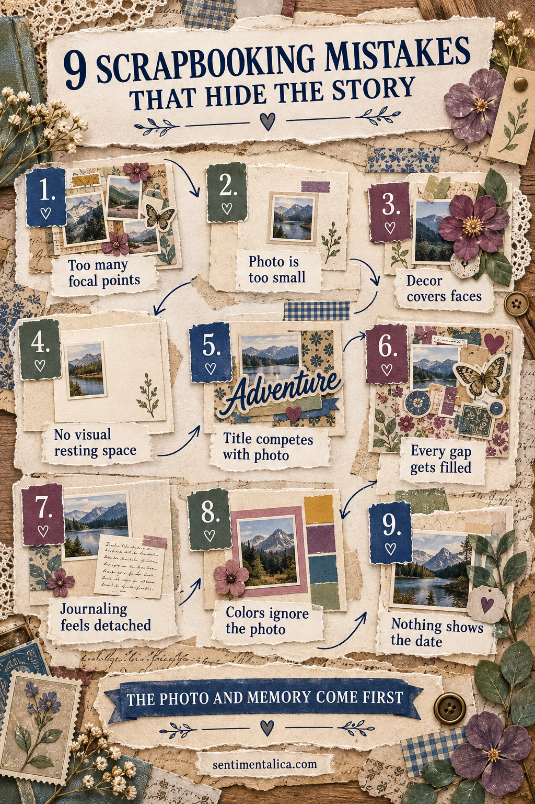
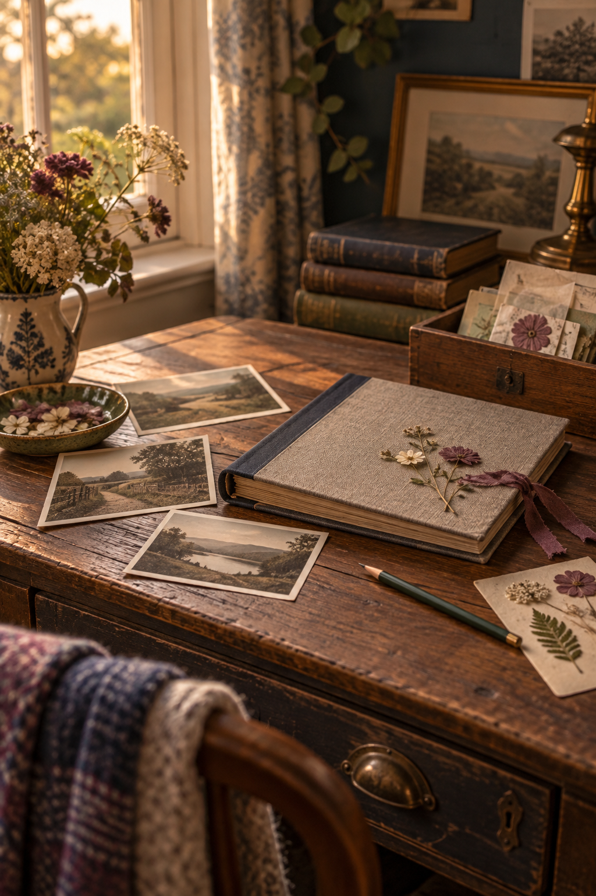

A scrapbook page can contain beautiful paper and still feel strangely distant from the memory. This happens when decoration becomes louder than the photograph, or when the journaling seems added after the layout was already finished.
The solution is not an empty page. It is a clearer hierarchy: photograph first, memory second, decoration in support.
1. Too many focal points
Three large images, a bold title and several statement embellishments all ask to lead. Choose one main photograph or one small photo group. Let everything else be visibly quieter.
2. The photograph is too small
A tiny photograph can disappear inside large patterns. Enlarge it, crop away unimportant background, or place it on a calm mat that creates enough visual weight.
3. Decoration covers important details
Flowers and labels should never hide a face, meaningful object or gesture. Before gluing, trace an imaginary border around the essential part of the image and keep that area clear.
4. There is no visual resting space
Blank paper is not unfinished. It helps the eye understand what matters. Preserve one calm area around the photograph or journaling rather than filling every visible gap.
5. The title competes with the photo
A title should orient the reader, not become a second picture. Reduce its size, shorten the wording or use a color already present in the photograph.
6. Every gap gets filled
Small stickers often multiply because each one seems harmless. Step back after placing three accents. If the page already feels balanced, return the rest to your supplies.
7. Journaling feels detached
Words placed far from the photograph can feel like a caption for another page. Align the journaling block with one photo edge, tuck it partly beneath the mat or connect it with a repeated color.
8. The colors ignore the photograph
Paper does not need to match perfectly, but it should acknowledge the image. Pull two colors from the photograph and add one neutral. Let the neutral occupy the largest area.
9. Nothing shows the date
Even an approximate date gives a memory context. Add the year, season, age or place on a tiny label. Your future self will be grateful for information that feels obvious today.

Use the story-first test
Photograph the unfinished layout with your phone and view it as a small thumbnail. Notice where your eye lands first. Then read only the journaling. Can you understand why the moment mattered?
If the decoration leads, remove or soften one bold piece. If the words feel generic, add one specific detail the photograph cannot show: the sound in the room, what happened next, or what someone said.

Scrapbooking is not a contest to use the most supplies. A strong page lets the photograph be seen, gives the memory a few honest words and uses color and texture to hold them together.